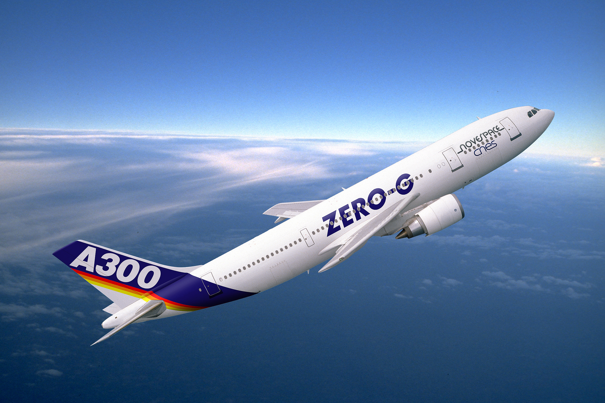
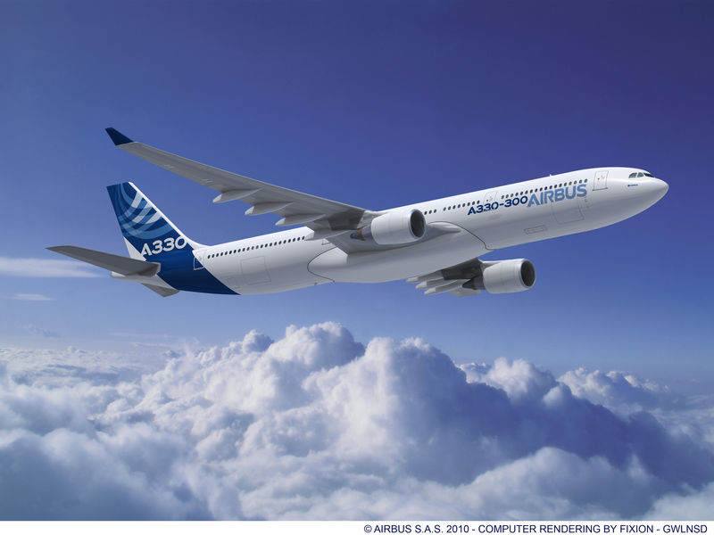

History
of Airbus Airbus
makes
the freedom of flight possible, having evolved during the past 40 years
thanks to the vision, innovation and passion of its employees.
The A300 became the world's first twin-engine widebody jet with its
commercial service entry during 1974. It was followed in the early
1980s by Airbus' shorter-fuselage A310 derivative, then later that
decade by the company's single-aisle A320 - which has developed into
one of the most successful aircraft families in history with the A318,
A319, A320 and A321.
The 1990s saw Airbus introduce its long-range A330/A340 Family, and a
new era of airline travel started in 2007 when the 525-seat A380 began
commercial operation. Responding to market requirements, Airbus also
launched its A350 XWB twin-engine jetliner which brings together the
very latest in aerodynamics, design and advanced technologies.
To maintain its competitive edge, Airbus continues to invest in
improvements across the product line - including development of the
A320neo (new engine option) version, its A330neo variant and more. The
company's international production network also has been significantly
expanded over the years, highlighted by its single-aisle final assembly
line in Tianjin, China, along with the A320 Family final assembly
facility in Mobile, Alabama, USA - the construction of which began in
2013. 
Planes
of Airbus The stretched-fuselage A330-300
matches twin-engine efficiency with
increased passenger capacity - all while retaining the A330 Family's
highly comfortable, low-noise cabin and operating commonality with the
entire Airbus fly-by-wire product line. With Airbus increase in the
jetliner's maximum takeoff weight to 242 tonnes, the A330-300 offers a
range of up to 6,100 nautical miles (11,300 km.) while carrying 300
passengers in a typical two-cabin arrangement, seating 36 in first or
business class, and 264 in economy.
Its designed-in flexibility allows airlines to integrate Airbus
innovative crew rest facilities without giving up revenue passenger
seats. A secure flight crew location next to the cockpit accommodates
one or two bunks, while a pallet-mounted rest area with up to seven
bunks for cabin personnel is designed for loading under the main deck,
with accessibility via a stair in. 